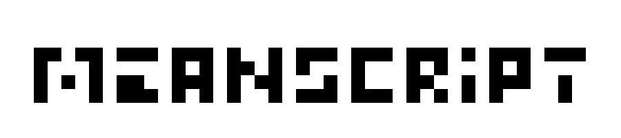

<html>
<head>
<title>Meanscript</title>
<link rel = "stylesheet" type = "text/css" href = "MeanscriptDemo.css" />
<link href="https://fonts.googleapis.com/css?family=Fira+Sans&display=swap" rel="stylesheet" />
</html>
<body class="doc">
<div style="max-width:680px; margin: 10px">
<p align=center>

<br>

<p>&nbsp;<p>
Meanscript is a multi-platform scripting language 
for both storing and transferring data, as well as programming as an interpreted programming language.
It's still on prototype level, but the idea is to combine best parts of
existing scripting languages like JavaScript, JSON, and Protocol Buffers, while keeping
it compact and easy to use. Meanscript aims to be a versatile, all-in-one tool for software
projects. Some examples of use cases:
<ul>
<li>Save application data as human-readable script or compact binary format
<li>Messaging over network, between different platforms and languages
<li>Data updating by applying only changes (delta/diff)
<li>Data representation using programming (e.g. conditional expressions)
<li>Scripted programs integrated to native source code 
<li>Remote procedure calls
</ul>


<p>


<!-- This text is aimed for programmers, but some parts may be readable for others too. -->
<p>
Code examples:

<pre>
print "Hello world!"
</pre>		
<pre>
func int getSum [int alpha, int beta] {  // Introduce a function with two arguments
    int result: sum (alpha, beta)        // Assign the sum of arguments to local variable
    return result                        // Exit the function with a return value
}
</pre>		
<pre>
struct Vec [int x, int y ]               // Introduce a structure (class) with two members

struct Person [                          // introduce another structure
	text name,
	Vec coordinates,
	int yearOfBirth
]

Person [3] team:                         // Array of three persons using structs defined above
	["Albert",    [321,546], 34],
	["Bertta",  [546,321], 56],
	["Carl",    [987,654], 78]
</pre>		


<h2>Featuring</h2>

<ul>
 <li> Support C#, C++, Java, and JavaScript.
 <li> <b>Meanscript compiler</b> translates text script to <b>bytecode</b> (binary format).
 <li> Meanscript <b>interpreter</b> reads and executes bytecode by iterative, non-blocking execution.
 <li> Read and write Meanscript data from your source code.
 <li> Basic data types: integer and floating-point (decimal) number, text, boolean.
 <li> Define <b>data structures</b> (like <i>struct</i> and <i>class</i> in other languages).
 <li> <b>Generate</b> classes in your source code language for Meanscript data and structures (like <i>Protobuf</i> builder)  
 <!-- <li> <b>Meanscript Builder</b> for generating data and byte code from your source code.--> 
 <li> Built-in data structures: <b>array, list, map</b> (collection of key-value pairs, a dictionary).
 <li> Define your own, additional data types from your source code, e.g. high precision number type, image, etc.
 <li> Functions with arguments, return values, conditions ("if"), loops ("while"), etc.
 <li> Call Meanscript <b>functions</b> from your source code, or your <b>callbacks</b> from Meanscript.
</ul>

<h2>Meanscript design fundamentals</h2>

<ul>
 <li><b>Practical.</b> All-in-one solution for various software.
 <li><b>Minimal</b> language core and syntax: small and fast.
 <li><b>Easy to expand. </b> Integrate to your own source code with your own data types and callbacks. 
 <li><b>Easy to set up, stand-alone.</b> Add Meanscript source code to your project and start scripting!
 Minimal dependencies to platforms and other software.
 <li><b>Convenient</b>. Easy to read and write, simple interface, easy to debug, and strong typing and type checking to avoid elusive bugs. Smooth crashing by exception hangling, along with informative error messages.
 <li><b>Iterative</b>, non-blocking bytecode execution. <!-- (instead of recursive, blocking execution) It enables waiting, triggers, events etc. without using threads or other platform support.-->
</ul>

 
<h2>Examples</h2>

<p>
You can access Meanscript data from your source code.
For example compile the next script to a binary file called <i>example.bin</i>.

<pre>
text name: "John"
int age: 38
</pre>

Read and access data from your scource code, for example (Java)

<pre class=native>
Meanscript ms = Meanscript.compile("example.bin");
String name = ms.getText("name");
int age = ms.getInt("age");
</pre>

You can generate similar data also from your source code by using Meanscript builder.

<pre class=native>
MSBuilder builder = new MSBuilder();
builder.addText("name", "John");
builder.addInt("age", 38);
builder.generate();
builder.writeFile("example.bin");
</pre>

<h3>Auto-generated structures</h3>


<p>
Define data structure with generated API for your source code, e.g.

<pre>
struct Person [text name, int age]
</pre>

Generate API with a Meanscript generation tool. The result in pseudo-Java would be:

<pre class=native>
class PersonReader {
  public PersonReader( ... );
  
  String  get_name()             { ... }
  int     get_age()              { ... }
}
class PersonWriter {
  public PersonWriter( ... );
  
  void    set_name(String name)  { ... }
  void    set_age(int age)       { ... }
}
</pre>

Create data using the new struct <i>Person</i>. By scripting like above:

<pre>
Person boss: ["John", 38]
Person janitor: ["Jack", 65]
</pre>

Or from your source code:

<pre class=native>
MSBuilder builder = new MSBuilder( ... );
PersonWriter boss = builder.addStruct(PersonWriter.ID, "boss");
boss.set_name("John");
boss.set_age(38);
// ...
builder.writeFile("example.bin");
</pre>

Access data from your source code.

<pre class=native>
Meanscript ms = Meanscript.compile("example.bin");
MyMS.PersonReader bossData ms.getData<MyMS.Person>("boss"); // auto-generated class

print(bossData.get_name() + " is the boss"); // Prints "John is the boss".
</pre>


<!--
<h3>Built-in data structures</h3>

<i>(Future plans)</i>
<p>
Create data using data strutures. For example create a list of <i>Person</i> type of items,
using built-in Meascript list:

<pre>
list [Person] personList
personList.add ["John", 38]
personList.add ["Jane", 57]
// ...
personList.add ["Jack", 45]
</pre>

Access data from your source code.

<pre class=native>
MS.MList list = ms.getList("personList"); // Class MS.MList would be part of Meanscript core
Person second = list.getAt<MyMS.Person>(1);
Person last = list.getLast<MyMS.Person>();
print(second.get_name() + " is the 2nd"); // prints "Jane is the 2nd"
</pre>


<h3>Data synchronization</h3>

Keep remote data updated by sending modifications (diff) instead of all data.
For example, modify your data:

<pre class=native>
MS.MList list = ms.getList("personList");
list.first.setText("name", "Carl");
</pre>

Export changes in script...

<pre>
@synchCheckSum: b9cad5cbdaca95fe
personList.first.name: "Carl"
</pre>

...or binary format. Send modifications over network and apply to remote Meascript data object.
-->
<!--

## Future plans

 * Meanscript editor
 * Support language's own serialization
 * Wait/pause, triggers, events, etc.
 * Unit tests
 * Class-like features: struct (~class) includes funtions that can be overridden by changing function body, etc.
 -->
<!-- 
How does it work?

Meanscript parser takes in the script text, read it, and make a parse tree of it.
Parse tree consists of tokens which are variable names, values, function calls, etc.
Parse tree’s sub-trees can be expressions, code blocks, structure definitions, etc.
When you execute the script Meanscript interpreter iterate through the parse tree and execute the commands in it.
Commands add data to Meanscript’s data map, and the data can be accessed by the script itself or external calls.
Data consists of atomic variables (integers, text, reference to a code block), data structures (maps, lists, etc.) and functions.

Meanscript's Java implementation uses following language features (considering things that can cause problems when porting from Java to other languages):
Exceptions
LinkedList
TreeMap
assert
console print (can be overridden)
-->

<p>
&nbsp;
<hr>
<p>
Copyright (C) 2019
<p>
&nbsp;
</div>
</body>
</html>
